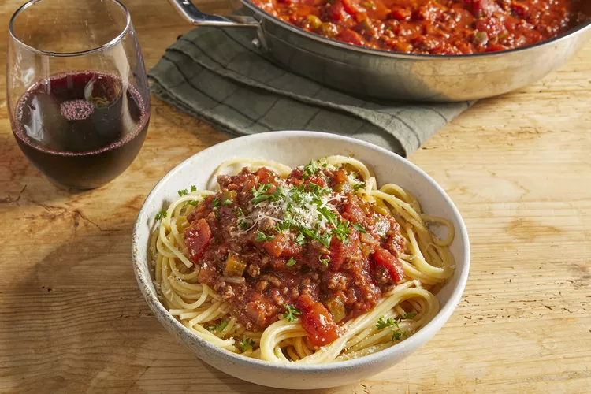

Spaghetti

How to Make Spaghetti Sauce with Ground Beef
Restaurant-worthy spaghetti sauce with ground beef is just a few steps away. You'll find the full recipe below, but here's a brief overview of what you can expect:
Description:
Ingredients
- 1 pound ground beef
- 1 medium onion, chopped
- 4 cloves garlic, minced
- 1 small green bell pepper, diced
- 1 (16 ounce) can tomato sauce
- 1 (6 ounce) can tomato paste
- 2 teaspoons dried oregano
- 2 teaspoons dried basil
- 1 teaspoon salt
- 2 teaspoons dried basil
Steps
- Combine ground beef, onion, garlic, and green pepper in a large saucepan over medium-high heat.
- Cook and stir until meat is browned and crumbly and vegetables are tender, 5 to 7 minutes.
- Drain grease.
- Stir diced tomatoes, tomato sauce, and tomato paste into the pan.
- Season with oregano, basil, salt, and pepper.
- Simmer spaghetti sauce for 1 hour, stirring occasionally.